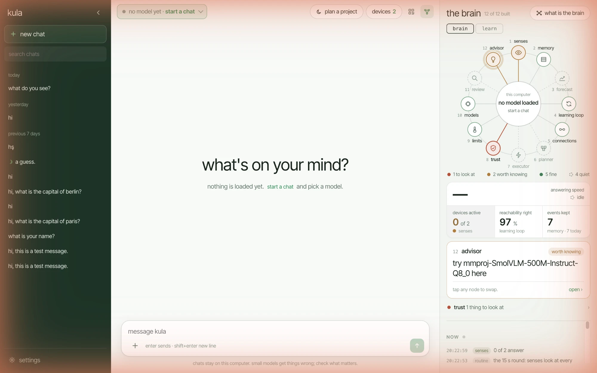

open models · on your own devices
Your devices,
one local AI.
kula joins your phones, tablets and computers into one AI cluster that runs open models. They talk to each other directly — nothing goes to a cloud.
-
MacBook
Apple silicon · .dmg
for this device
First open: right-click the app → Open. On macOS 15: System Settings → Privacy & Security → Open Anyway. Intel Mac?
-
Windows
64-bit · .exe
for this device
If Windows warns: More info → Run anyway.
-
iOS coming later
The iPhone app does not run models yet. Use a computer or an Android phone for now.
-
Android
phones & tablets · .apk
for this device
Open the apk and allow installing from this source when Android asks.

One AI from all your devices
A phone joins by scanning a QR code, a computer by running kula. Together they answer as one.
Nothing leaves the room
Open models run on your own phones and computers. No account, no cloud, no outside server.
Apart or split
Apart: every device runs its own copy and the speeds add up. Split: one model too big for any one device is spread over several.
The brain watches over it
It measures each device, picks what fits, keeps heat and memory in their limits, and says why.
How it works
Install kula on each device → open the chat page on the computer → connect the phones (QR, same wi-fi, hotspot or a USB cable) → pick a model. It downloads once, is checked by sha256, and runs on llama.cpp across the devices.
Models it runs today
- Qwen3.8 27B
- Qwen3.5 4B
- Qwen3 0.6B
- Gemma 4 E4B
- Gemma 3 4B
- Llama 3.3 70B
- Llama 3.2 3B
- Phi-4 mini
- DeepSeek R1 Qwen3 8B
- gpt-oss 20B
- Mistral Small 3.2
- GLM 4.7 Flash
…and about 40 more in the app's list. Which ones fit depends on your devices' memory; the brain tells you.